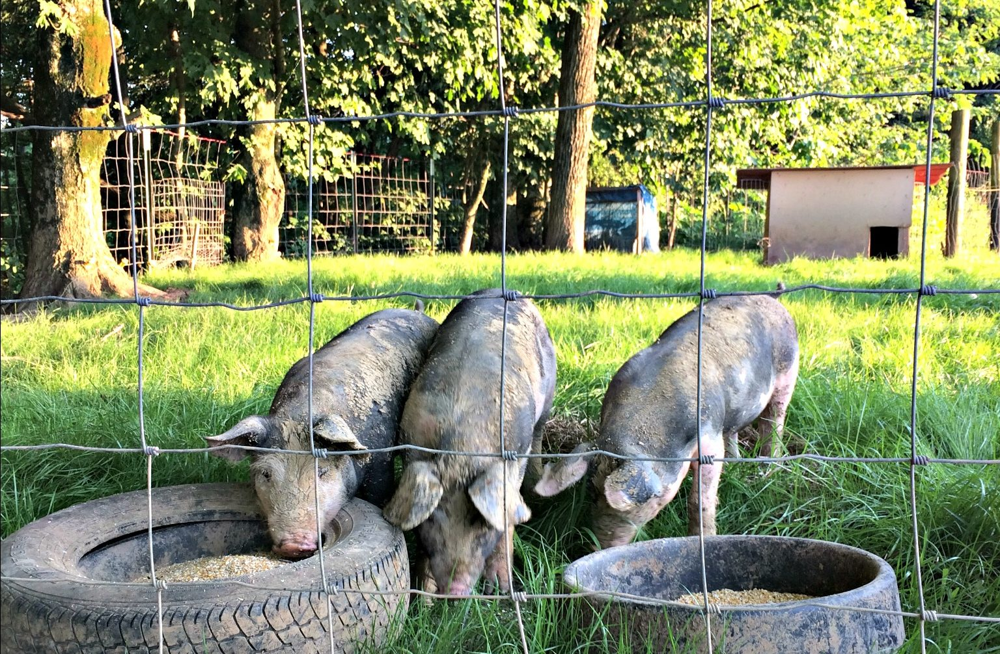
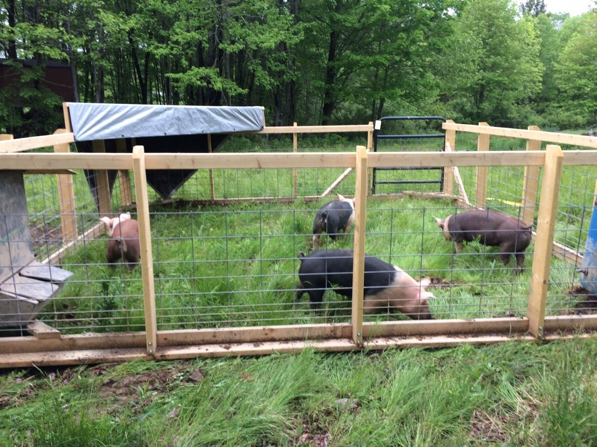
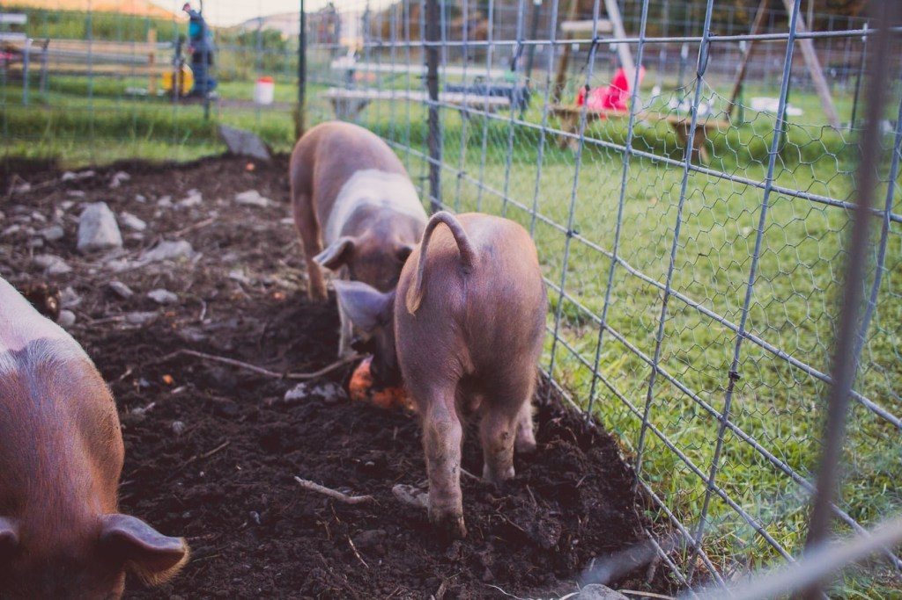

It is good time to start fencing during the first 4-6 weeks, and pigs can be fenced by many different ways. There are three most popular fencing for pigs
See Translation...
Ito ay magandang panahon upang simulan ang pagbabakod sa loob ng unang 4-6 na linggo, at ang mga baboy ay maaaring bakuran sa maraming iba't ibang paraan. Mayroong tatlong pinakasikat na eskrima para sa mga baboy
- Perimeter fencing with hot-wire is the cheapest way to go especially for large areas.
See Translation...
Ang perimeter fencing na may hot-wire ay ang pinakamurang paraan para bilhin lalo na sa malalaking lugar.

- Hog wire roll fencing with metal T post and wood post for bracing corners and long spans is a little more expensive.
See Translation...
Ang hog wire roll fencing na may metal T post at wood post para sa mga sulok ng bracing at mahabang span ay medyo mas mahal.

- Hog panels with metal T post for support is the most expensive way to go, but it is also the easiest way to install and virtually maintenance free.
See Translation...
Ang mga hog panel na may metal na T post para sa suporta ay ang pinakamahal na paraan, ngunit ito rin ang pinakamadaling paraan sa pag-install at halos walang maintenance.

For outdoor shelter, it is always better to use the natural environment for shade and protection. A wooden area is good to choose, but if you have no wooden area, you have to build or purchase one.
See Translation...
Para sa panlabas na kanlungan, palaging mas mahusay na gamitin ang natural na kapaligiran para sa lilim at proteksyon. Ang isang kahoy na lugar ay magandang pumili, ngunit kung wala kang kahoy na lugar, kailangan mong magtayo o bumili ng isa.